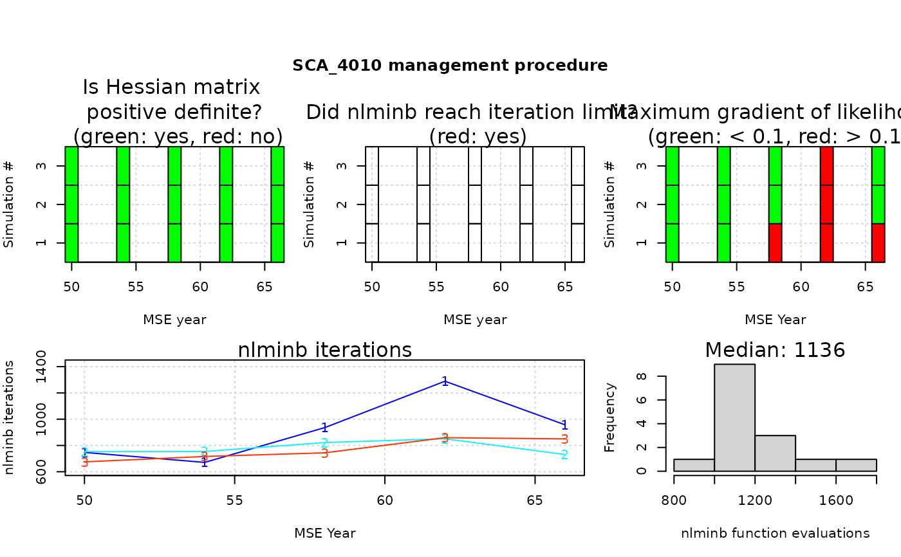

R/diagnostic.R
diagnostic.RdDiagnostic check for convergence of Assess models during closed-loop simulation. Use when the MP was
created with make_MP with argument diagnostic = "min" or "full".
This function summarizes and plots the diagnostic information.
diagnostic(MSE, MP, gradient_threshold = 0.1, figure = TRUE) diagnostic_AM(...)
| MSE | An object of class MSE created by |
|---|---|
| MP | Optional, a character vector of MPs that use assessment models. |
| gradient_threshold | The maximum magnitude (absolute value) desired for the gradient of the likelihood. |
| figure | Logical, whether a figure will be drawn. |
| ... | Arguments to pass to |
A matrix with diagnostic performance of assessment models in the MSE. If figure = TRUE,
a set of figures: traffic light (red/green) plots indicating whether the model converged (defined if a positive-definite
Hessian matrix was obtained), the optimizer reached pre-specified iteration limits (as passed to nlminb),
and the maximum gradient of the likelihood in each assessment run. Also includes the number of optimization iterations
function evaluations reported by nlminb for each application of the assessment model.
Q. Huynh
#>#> Loading operating model #>#> Optimizing for user-specified movement #>#> Optimizing for user-specified depletion in last historical year #>#> Calculating historical stock and fishing dynamics #>#> Calculating MSY reference points for each year #>#> Calculating B-low reference points #>#> Calculating reference yield - best fixed F strategy #>#> Simulating observed data #>#> Running forward projections #>#> 1 / 1 Running MSE for SCA_4010 #>#> ....................diagnostic(myMSE)#> #>#> SCA_4010 #> Percent positive-definite Hessian 100 #> Percent iteration limit reached 0 #> Percent max. gradient < 0.1 80 #> Median iterations 530 #> Median function evaluations 773# }